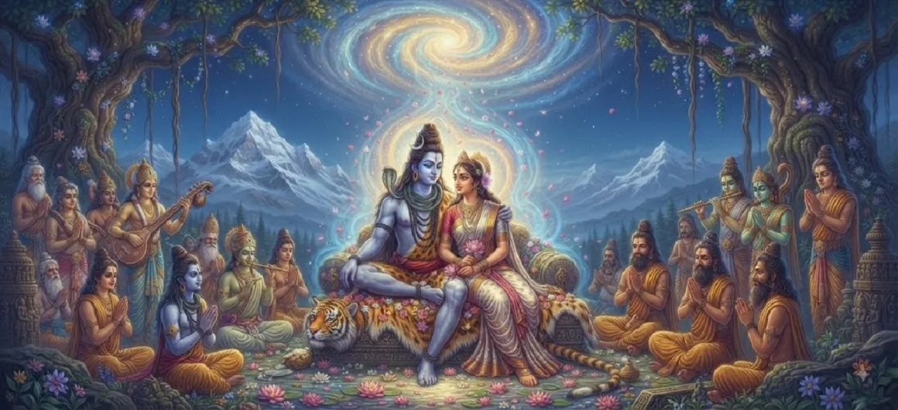

शिव और पार्वती दिव्य मिलन में
कुमार खण्ड का छठा अध्याय भगवान शिव और देवी पार्वती के शानदार और आध्यात्मिक रूप से गहन विवाह का वर्णन करता है। कठोर तपस्या और दिव्य आयोजन के बाद, शाश्वत तपस्वी अपना हृदय गृहस्थ जीवन के लिए खोलता है।
यह पवित्र ब्रह्मांडीय मिलन शुद्ध चेतना को सक्रिय ऊर्जा के साथ मिश्रित करता है, जो पूरे ब्रह्मांड में धार्मिकता की बहाली की नींव रखता है।
अध्याय 6 की मुख्य बातें
पवित्र विवाह
कैलाश पर राजसी विवाह समारोह।
शिव-शक्ति बंधन
स्थैतिक और गतिशील ब्रह्मांडीय सिद्धांतों का विलय।
दिव्य आनन्द
देवता और ऋषि दिव्य विवाह का उत्सव मना रहे हैं।
हिमालय गौरव
राजा हिमवान और रानी मैना द्वारा अपनी कन्यादान करना
उत्कृष्ट आनंद
तीनों लोकों में व्याप्त तेज।
नई शुरुआत
उद्धारकर्ता के जन्म के लिए मंच तैयार करना।
इस अध्याय में मुख्य विषय
दिव्य विवाह की भव्य तैयारी
हिमालय दिव्य सजावट से जगमगाता है क्योंकि ऋषि, देवता और स्वर्गीय संगीतकार पहाड़ों की बेटी के साथ आदिम तपस्वी के विवाह को देखने के लिए इकट्ठा होते हैं।
प्रत्येक क्षेत्र इस अभूतपूर्व ब्रह्मांडीय घटना की भव्यता में योगदान देता है।
भगवान शिव का जुलूस और आगमन
भगवान शिव गणों, दिव्य प्राणियों और आत्माओं के साथ एक अद्भुत जुलूस में आते हैं, जो उत्कृष्ट सुंदरता, अपरंपरागत महिमा और सर्वोच्च दिव्य शक्ति का दृश्य प्रस्तुत करते हैं।
दूल्हे का रूप सभी एकत्रित देवताओं को मंत्रमुग्ध कर देता है।
वैदिक अनुष्ठानों और अनुष्ठानों का प्रदर्शन
दिव्य ऋषियों के विशेषज्ञ मार्गदर्शन में, पवित्र अग्नि प्रसाद और गंभीर प्रतिज्ञाओं सहित सभी पारंपरिक वैदिक विवाह संस्कार अत्यंत भक्ति और सटीकता के साथ किए जाते हैं।
वातावरण पवित्र भजनों और मंत्रों से गूंज उठता है।
राजा हिमवान द्वारा पवित्र कन्यादान
अत्यधिक खुशी और श्रद्धा से भरे राजा हिमवान ने कन्यादान की रस्म में औपचारिक रूप से देवी पार्वती का हाथ भगवान शिव के हाथ में रख दिया।
स्वर्ग दिव्य जोड़े पर फूलों और आशीर्वादों की वर्षा करता है।
दिव्य आशीर्वाद और सार्वभौमिक आनन्द
ब्रह्मा, विष्णु और सभी देवता हार्दिक स्तुति करते हैं, गहन राहत और खुशी व्यक्त करते हैं, यह जानते हुए कि यह पवित्र मिलन ब्रह्मांड को मोक्ष के एक कदम करीब लाता है।
कई दिनों तक तीनों लोकों में उत्सव गूंजता रहता है।
सर्वोच्च ब्रह्मांडीय सद्भाव की स्थापना
शिव और पार्वती का मिलन स्थैतिक चेतना और गतिशील ऊर्जा की दोहरी शक्तियों में सामंजस्य स्थापित करता है, संतुलन बहाल करता है और दिव्य नियति की पूर्ति के लिए मंच तैयार करता है।
सार्वभौमिक व्यवस्था अपने आधारों को मजबूती से पुनः स्थापित पाती है।
अध्याय 7 की ओर दिव्य ऊर्जा का उद्भव
पवित्र विवाह सफलतापूर्वक संपन्न होने के साथ, कथा अगले अध्याय में बदल जाती है, जिसमें बताया गया है कि इस सर्वोच्च मिलन से दिव्य ऊर्जा कैसे प्रकट होती है।
अगला अध्याय दिव्य तेज की चमत्कारी अभिव्यक्ति का खुलासा करता है।
अध्याय 6 की प्रमुख शिक्षाएँ
पवित्र विवाह
विवाह आत्माओं का गहन आध्यात्मिक मिलन है।
शिव-शक्ति समन्वय
निष्क्रिय ज्ञान और सक्रिय सृजन का संतुलन।
भक्ति का प्रतिफल
पार्वती का समर्पण ब्रह्मांडीय व्यवस्था को बदल देता है।
सार्वभौमिक आनंद
धर्मी संघ पूरे ब्रह्मांड में शांति लाते हैं।
ईश्वरीय कृपा
ब्रह्मांडीय घटनाएँ उच्च योजनाओं के अनुसार घटित होती हैं।
भाग्य का पलटना
आशा मूर्त दिव्य वास्तविकता में बदल रही है।
आध्यात्मिक चिंतन
शिव और पार्वती का दिव्य मिलन मानव चेतना के भीतर परम एकीकरण का प्रतीक है - जीवंत, रचनात्मक जीवन ऊर्जा के साथ अचल जागरूकता का विलय। जब ये दोनों सिद्धांत हमारे भीतर एकजुट हो जाते हैं, तो सभी आंतरिक संघर्ष शुद्ध शांति में विलीन हो जाते हैं।
अध्याय 6 का संदेश जीना
प्रतिबद्धताओं और रिश्तों को पवित्र आध्यात्मिक बंधन के रूप में सम्मान दें।
दुनिया में सक्रिय, दयालु भागीदारी के साथ अपनी आंतरिक शांति को संतुलित करें।
नेक मील के पत्थर और यूनियनों का जश्न मनाएं जो आपके समुदाय में सद्भाव लाते हैं।
प्रमुख आध्यात्मिक अवधारणाएँ
पवित्र ब्रह्मांडीय विवाह का तात्त्विक महत्व
पुरुष और महिला ब्रह्मांडीय सिद्धांतों का अविभाज्य एकीकरण।
कैलाश पर्वत पर आयोजित हुआ भव्य दिव्य विवाह उत्सव।
सर्वोच्च चेतना और गतिशील ऊर्जा का सामंजस्यपूर्ण मिलन।
पार्वती का उनके शाही हिमालयी पिता द्वारा पवित्र त्याग।
विवाह के दौरान त्रिदेवों और देवताओं द्वारा प्रस्तुत किए गए उत्सवपूर्ण भजन।
अध्याय सारांश
कुमार खण्ड अध्याय 6 भगवान शिव और देवी पार्वती के राजसी और पवित्र विवाह का वर्णन करता है, जो सार्वभौमिक सद्भाव को बहाल करने के लिए चेतना और ऊर्जा का अंतिम मिलन स्थापित करता है।
अक्सर पूछे जाने वाले प्रश्न
1. कुमार खण्ड अध्याय 6 का मुख्य विषय क्या है?
अध्याय 6 भगवान शिव और देवी पार्वती के पवित्र विवाह और दिव्य मिलन पर केंद्रित है, जो ब्रह्मांडीय इतिहास में एक महत्वपूर्ण मोड़ है।
2. शिव और पार्वती के विवाह का ब्रह्मांडीय महत्व क्यों है?
उनका मिलन सर्वोच्च तपस्वी चेतना को गतिशील ब्रह्मांडीय ऊर्जा के साथ जोड़ता है, जिससे तारकासुर को हराने के लिए आवश्यक दिव्य योद्धा के जन्म का मार्ग प्रशस्त होता है।
3. भव्य विवाह समारोह में किसने भाग लिया?
सभी दिव्य देवता, ऋषि, दिव्य संगीतकार और स्वर्गीय प्राणी इस पवित्र विवाह को देखने और मनाने के लिए हिमालय में एकत्र हुए।
4. अध्याय 6 के बाद अगला अध्याय कौन सा है?
अगले अध्याय का शीर्षक 'दिव्य ऊर्जा का उद्भव' है।
"जब शिव और पार्वती एक हो जाते हैं, तो ब्रह्मांड शांति और प्रेम के शाश्वत आलिंगन में आनन्दित होता है, जिससे सारी सृष्टि के लिए अंतिम आश्रय बनता है।"
कुमार खण्डा के माध्यम से जारी रखें
अध्याय 6 शिव और पार्वती के दिव्य मिलन का जश्न मनाता है। अगले अध्याय, दिव्य ऊर्जा का उद्भव, जारी रखें।